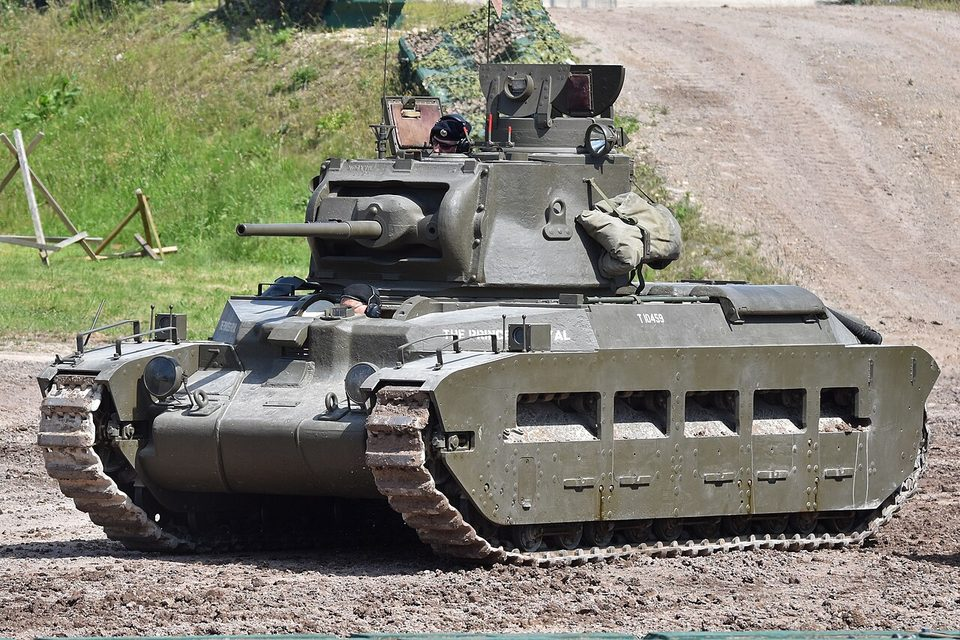

Todos los tanques › Segunda Guerra Mundial
Segunda Guerra Mundial
El carro de combate se convierte en el arma decisiva de la guerra terrestre.
14 tanques
-
 Japón · 1938
Japón · 1938Type 97 Chi-Ha
Carro medio
-
 Unión Soviética · 1939
Unión Soviética · 1939KV-1
Carro pesado
-

Reino Unido · 1939Matilda II
Carro de infantería
-
 Alemania · 1939
Alemania · 1939Panzer III
Carro medio
-
 Alemania · 1939
Alemania · 1939Panzer IV
Carro medio
-
 Alemania · 1940
Alemania · 1940StuG III
Cañón de asalto
-
 Unión Soviética · 1940
Unión Soviética · 1940T-34
Carro medio
-
 Reino Unido · 1941
Reino Unido · 1941Churchill
Carro de infantería
-
 Estados Unidos · 1942
Estados Unidos · 1942M4 Sherman
Carro medio
-
 Alemania · 1942
Alemania · 1942Tiger I
Carro pesado
-
 Estados Unidos · 1943
Estados Unidos · 1943M18 Hellcat
Cazacarros
-
 Alemania · 1943
Alemania · 1943Panther
Carro medio
-
 Unión Soviética · 1944
Unión Soviética · 1944IS-2
Carro pesado
-
 Alemania · 1944
Alemania · 1944Tiger II
Carro pesado